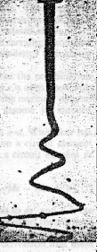

1965b
The following is a Letter to the Editor of the IEE journal 'Electronics and Power' published in the June, 1965 issue at p. 202.
ELECTRODYNAMIC THEORY
Dear Sir - In my letter of the above title (April 1965, Electronics and Power, p. 137), I proposed the following equation for the electrodynamic force between two current elements:
F = (ii'/r3)[(ds'.r)ds - (ds.r)ds' - (ds.ds')r] .... (1)
where F is the force on a circuit element ds' due to a current i in a circuit element ds, r is the line frorn ds to ds' and i' is the current in ds'. In this expression the currents and the term r3 are scalar and ds, ds' and r are vectors.
The law of force between two current elements is important in practice since it is used to calculate make-and-break forces on contact members in circuit breakers and end forces on windings in dynamoelectric machines. It can, however, be argued that in all practical situations current flows in continuous closed circuits, and it may then be shown that the middle term in the above
expression, which represents force directed along the line of current flow, integrates to zero. It can equally be argued that all sources of current flow, even displacement current, may arise from a motion of isolated charge, be it due to the flow of electrons or elements of charge in the aether. The concept of a
closed filament of current must then be qualified by the concept of a series of microscopic discontinuities in the current
filament. The middle term in the above law of force then assumes very significant eftect. In fact, for an infinitesimal discontinuity in the current filament, the law of force would
cause a compressive force of i2 dyne to act along the filament. (Here i is in abamps, units of 0.1 amps) This force value still applies if there are many discontinuities and exists even if the discontinuities are transient, provided that there is always at least one break in the current path.
This poses a very important question. Do we accept the ideal mathematical concept that current flow must be continuous, or do
we recognise that Nature may provide such discontinuities on a microscopic scale? If we accept the former viewpoint, we accept
that there is no compressive force along the current filament and no electrodynamic hold-on compressive force across circuit-
breaker contact faces. If we accept the other viewpoint, we can better understand instabilities in electrical discharges in thermonuclear reactors, and we can explain the very significant result evident from the photograph presented on p. 14 of the January 1965 Electronics and Power.

This photograph shows a falling column of mercury which carries a heavy current and develops, under the action of this current, a helical motion of increasing radius. Near the bottom of its fall, it is drawn back by its own electrodynamic action to the central axis of the system. The really interesting point is that the column is able to hold together at the bottom of its fall and turn back to the central axis as the current pulls it towards the fixed electrode in a receiving pool of mercury. This clearly shows that the electrodynamic force on the mercury column
due to its own closed current circuit has, contrary to present theory, a resultant action directed along the line of current flow, and I submit that we must take note of this fundamental anomaly.
Yours faithfully,
H. ASPDEN
IBM Research Laboratories
Hursley Park, Winchester, Hants.
8th April 1965
Commentary: Note that here I was suggesting that the mutual attraction of current elements in the discharge would set up a compressive force directed axially along that discharge. The implication then is that this would make the discharge extend so as to form those sinuosities that were observed.
On this interpretation I could see that there was little chance of success in the efforts in thermonuclear fusion research where the task was to stabilize a deuterium plasma discharge. Here I had developed an insight into the form of electrodynamic law destined to provide us with a Unified Field Theory, but by the same destiny killing all prospect of electrodynamic pinch being used to trigger thermonuclear reactions (hot fusion). My efforts in suggesting the invention described in U.K. Patent No. 892,333 [1958b] were then best forgotten, and indeed scientists should have realized that the effort going into the hot fusion research back in the mid 1960s was not justified and should have been curtailed in the light of this observation concerning the falling column of mercury. After all, that experiment had a research purpose and it was in connection with that thermonuclear field of research. Dr. Ware, who had commented on my earlier Letter [1965a], was a pioneer in that field.
It is worth noting here that I had in mind in this 1965 period the thought that our knowledge of electrodynamic interaction was founded exclusively on empirical data involving electron currents. There was scope for study of how an electron current might interact with a proton current or a currentr carried by moving heavy ions. Here one thinks of the cold cathode discharge, where heavy ions feature in the discharge and force anomalies are observed. Also, the free conduction electrons in the mercury column experiment exist in a background of heavy positive ions. The mean transport speed of electrons as they carry current is quite slow and comparable with, indeed much slower than, the flow rate of that falling mercury column. So there was an experiment which involved something unusual electrodynamically and I was saying in my Letters to the Editor of Electronics and Power that mercury column discharge instability was anomalous.
You may then understand why it is that I began to study theoretically the electrodynamic interaction between moving charges having different mass. Indeed, you can see what emerged very rapidly because in 1966 I published my book The Theory of Gravitation, where, on page 23-31 I presented the formal theoretical derivation of the Law of Electrodynamics, corresponding to equation (1) above, and further showed how it was affected if the interacting current circuit elements involved moving charges (e) of different mass. Here was the answer to those anomalous axial forces in the cold cathode discharge! The theory was later published in the Journal of the Franklin Institute. See [1969a]. The theory is also presented in the Tutorial Notes of these Web pages, namely in Tutorial No. 4.
Harold Aspden